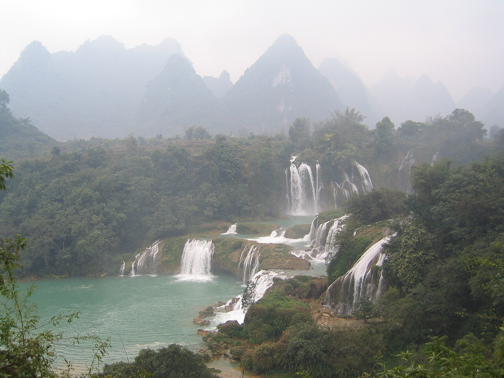

1. Vịnh Hạ Long
Gần 2.000 đảo đá vôi, Di sản thiên nhiên thế giới, thuộc Quảng Ninh.

2. Hang Sơn Đoòng
Hang động tự nhiên lớn nhất thế giới, thuộc Quảng Bình.

3. Thác Bản Giốc
Thác nước đẹp nhất Việt Nam, nằm ở Cao Bằng.

4. Fansipan<
Mái nhà Đông Dương", cao 3.147 m, thuộc Lào Cai.

5. Đồng bằng sông Cửu Long
Vựa lúa, miệt vườn sông nước trù phú miền Nam.

6. Động Phong Nha
Hệ thống hang động kỳ vĩ, Di sản thiên nhiên thế giới.